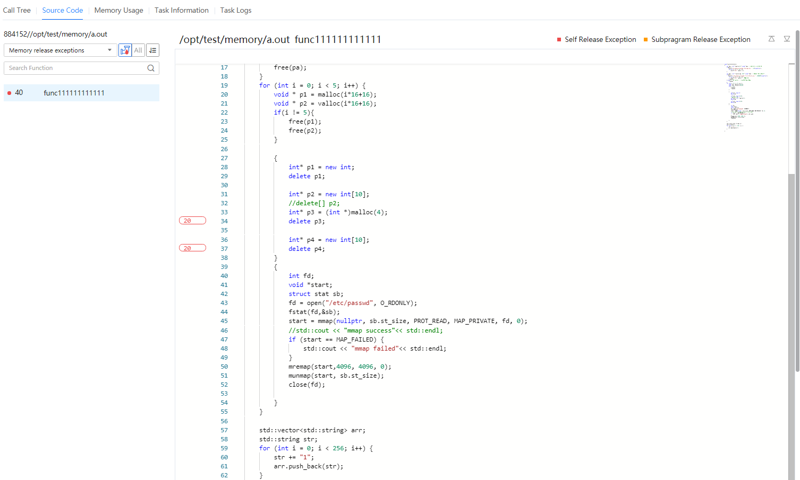

Prerequisites
A memory leak diagnosis task has been created and successfully analyzed.
Procedure
- In the Project Management area, click
 before the target project and analysis task.
before the target project and analysis task.The node list is displayed.
- Click the name of the target node to view the analysis result.Click the node name and click the Source Code tab. See Figure 1.

- Click to view the functions with self memory leaks, click
 to view all functions with memory leaks of the entire call stack, and click to sort the functions by number of leaks or leaked memory size.
to view all functions with memory leaks of the entire call stack, and click to sort the functions by number of leaks or leaked memory size. - In the code box, the number of memory leaks is displayed in the front of the line where the code with memory leaks is located. The content highlighted in red indicates the number of self memory leaks, and the content highlighted in orange indicates the number of subprogram memory leaks.
- You can click
 to switch the lines of code that have leaks.
to switch the lines of code that have leaks.
- Click to view the functions with self memory leaks, click
- Click
 to select Leaked memory size from the drop-down list. See Figure 2.
to select Leaked memory size from the drop-down list. See Figure 2.
- Click
 to select Memory release exceptions from the drop-down list. See Figure 2.Figure 3 Memory release exceptions
to select Memory release exceptions from the drop-down list. See Figure 2.Figure 3 Memory release exceptions
 You can click View Code in the Operation column to view the code of the function that has memory release exceptions.
- Click the Task Information tab to view the detailed configuration and sampling information about the task on the current node.
If the task fails to be executed, the failure cause is displayed on the Task Information tab page.
- Click the Task Logs tab page to view the detailed log information.